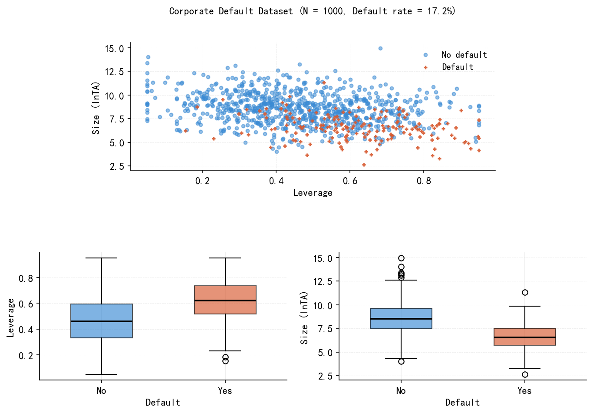
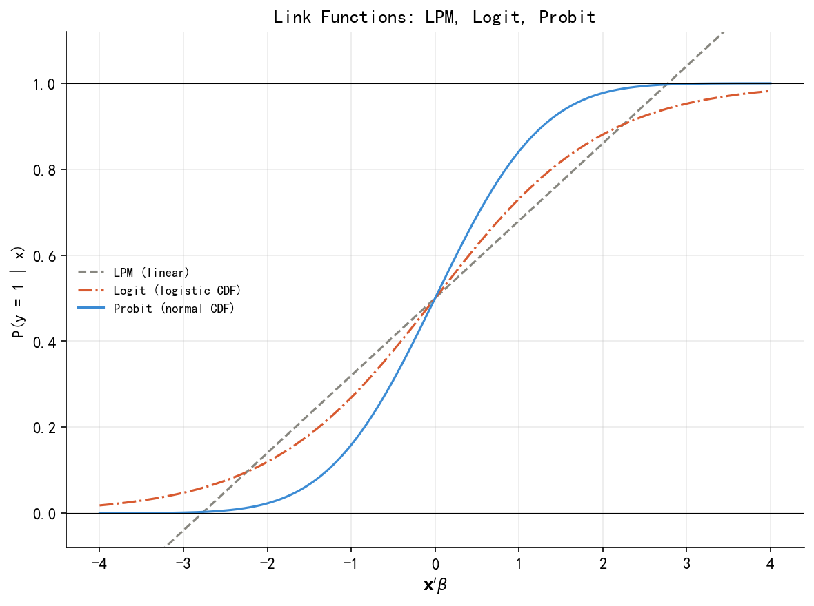
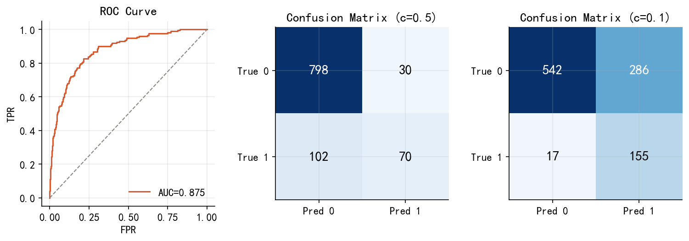
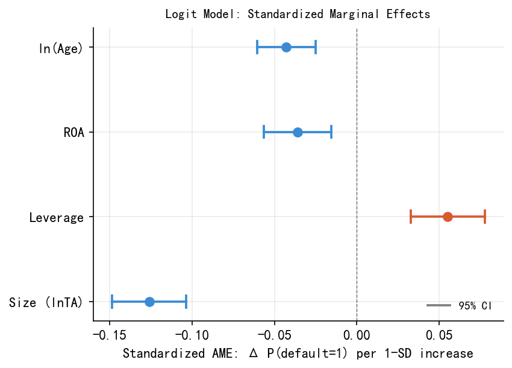

import numpy as np
import pandas as pd
import matplotlib.pyplot as plt
import matplotlib.gridspec as gridspec
from matplotlib.lines import Line2D
from scipy import stats
from scipy.special import expit
from sklearn.metrics import roc_curve, auc, confusion_matrix
import statsmodels.api as sm
import warnings, os
warnings.filterwarnings('ignore')
plt.rcParams['font.sans-serif'] = ['SimHei']
plt.rcParams['axes.unicode_minus'] = False
os.makedirs('./figs', exist_ok=True)
os.makedirs('./data', exist_ok=True)
plt.rcParams.update({
'font.size': 11, 'axes.spines.top': False, 'axes.spines.right': False,
'axes.grid': True, 'grid.alpha': 0.25, 'figure.dpi': 150,
})
BLUE, ORANGE, GRAY = '#3B8BD4', '#D85A30', '#888780'35 附：Codes
生成 02_a_binary_lec.qmd 中所需的全部图片，并将模拟数据保存到 ./data/。
35.1 1. 数据生成（DGP）
np.random.seed(42)
N = 1000
corr_matrix = np.array([
[1.00, -0.30, 0.25, 0.40],
[-0.30, 1.00, -0.20, -0.10],
[ 0.25, -0.20, 1.00, 0.10],
[ 0.40, -0.10, 0.10, 1.00]
])
L = np.linalg.cholesky(corr_matrix)
Z = np.random.standard_normal((4, N))
corr_Z = (L @ Z).T
size = 8.0 + 1.8 * corr_Z[:, 0]
lev = np.clip(0.45 + 0.18 * corr_Z[:, 1], 0.05, 0.95)
roa = np.clip(0.05 + 0.06 * corr_Z[:, 2], -0.13, 0.23) # std≈0.06
age = np.clip(10 + 7 * corr_Z[:, 3], 1, 35).round().astype(float)
industry = np.random.choice(
['manufacturing','real_estate','finance','tech'], N, p=[0.4,0.2,0.2,0.2])
ownership = np.random.choice(['state','private'], N, p=[0.4,0.6])
size_adj = size + np.where(ownership=='state', 0.5, 0.0)
lev_adj = np.clip(
lev
+ np.where(ownership=='state', -0.08, +0.08)
+ np.where(industry =='real_estate', 0.06, 0.00),
0.05, 0.95)
ind_fx = {'manufacturing':0.0,'real_estate':0.5,'finance':-0.3,'tech':0.2}
own_fx = {'state':-0.4,'private':0.2}
logit_v = (
-2.5
- 0.60 * (size_adj - 8)
+ 4.00 * (lev_adj - 0.45)
- 8.00 * (roa - 0.05)
- 0.08 * (age - 10) # -0.08，保证 lnage 显著
+ np.array([ind_fx[i] for i in industry])
+ np.array([own_fx[o] for o in ownership])
)
default = (np.random.uniform(0,1,N) < expit(logit_v)).astype(int)
df = pd.DataFrame({
'default': default,
'size': size_adj.round(4),
'leverage': lev_adj.round(4),
'roa': roa.round(4),
'age': age,
'lnage': np.log(age).round(4),
'industry': industry,
'ownership':ownership
})
df.to_csv('./data/corporate_default.csv', index=False)
print(f'N={N} | 违约样本: {default.sum()} | 违约率: {default.mean():.1%}')
print('数据已保存到 ./data/corporate_default.csv')
print('\n相关矩阵：')
print(df[['size','leverage','roa','lnage']].corr().round(2))N=1000 | 违约样本: 172 | 违约率: 17.2%
数据已保存到 ./data/corporate_default.csv
相关矩阵：
size leverage roa lnage
size 1.00 -0.33 0.27 0.32
leverage -0.33 1.00 -0.20 -0.10
roa 0.27 -0.20 1.00 0.12
lnage 0.32 -0.10 0.12 1.0035.2 2. 构建完整模型（供后续各图使用）
df_tmp = df.copy()
df_tmp['industry'] = pd.Categorical(
df_tmp['industry'], categories=['manufacturing','real_estate','finance','tech'])
df_tmp['ownership'] = pd.Categorical(
df_tmp['ownership'], categories=['private','state'])
df_enc = pd.get_dummies(df_tmp, columns=['industry','ownership'], drop_first=True)
feat_cols = ['size','leverage','roa','lnage',
'industry_real_estate','industry_finance','industry_tech','ownership_state']
X_full = sm.add_constant(df_enc[feat_cols].astype(float))
y = df['default'].values
logit_full = sm.Logit(y, X_full).fit(disp=0)
HI = 'Cont. Int. Hi.'
print('=== Logit 完整模型 ===')
print(logit_full.summary2().tables[1][['Coef.','Std.Err.','z','P>|z|']].round(4))
print(f'\nMcFadden R² = {logit_full.prsquared:.3f} AIC = {logit_full.aic:.1f}')=== Logit 完整模型 ===
Coef. Std.Err. z P>|z|
const 3.6636 0.7512 4.8771 0.0000
size -0.7524 0.0811 -9.2735 0.0000
leverage 3.0367 0.6548 4.6373 0.0000
roa -6.3993 1.8930 -3.3805 0.0007
lnage -0.4848 0.1063 -4.5626 0.0000
industry_real_estate 0.4334 0.2790 1.5532 0.1204
industry_finance -0.1116 0.2955 -0.3777 0.7056
industry_tech 0.2635 0.2754 0.9570 0.3386
ownership_state -0.7907 0.2406 -3.2871 0.0010
McFadden R² = 0.333 AIC = 630.435.3 3. fig01：三联图
# d0, d1 = df[df.default==0], df[df.default==1]
# fig, axes = plt.subplots(1, 3, figsize=(13, 4.2))
# ax = axes[0]
# ax.scatter(d0.leverage, d0['size'], alpha=0.25, s=16, color=BLUE, marker='o', label='No default')
# ax.scatter(d1.leverage, d1['size'], alpha=0.65, s=16, color=ORANGE, marker='+', linewidths=1.2, label='Default')
# ax.set_xlabel('Leverage'); ax.set_ylabel('Size (lnTA)'); ax.legend(frameon=False, fontsize=9)
# for ax, var, ylabel in [(axes[1],'leverage','Leverage'),(axes[2],'size','Size (lnTA)')]:
# bp = ax.boxplot([d0[var].values, d1[var].values], patch_artist=True, widths=0.5,
# medianprops=dict(color='black', linewidth=2))
# bp['boxes'][0].set(facecolor=BLUE, alpha=0.65); bp['boxes'][1].set(facecolor=ORANGE, alpha=0.65)
# ax.set_xticklabels(['No','Yes']); ax.set_xlabel('Default'); ax.set_ylabel(ylabel)
# plt.suptitle('Corporate Default Dataset (N=1000, Default rate=17.2%)', y=1.01, fontsize=11)
# plt.tight_layout()
# plt.savefig('./figs/fig01_scatter.png', bbox_inches='tight'); plt.show()
# print('Saved: fig01_scatter.png')d0, d1 = df[df.default == 0], df[df.default == 1]
fig = plt.figure(figsize=(10, 7))
ax0 = fig.add_axes([0.22, 0.58, 0.56, 0.28]) # [left, bottom, width, height]
ax1 = fig.add_axes([0.08, 0.12, 0.38, 0.28])
ax2 = fig.add_axes([0.54, 0.12, 0.38, 0.28])
ax0.scatter(d0.leverage, d0['size'], alpha=0.55, s=14, color=BLUE, marker='o', label='No default')
ax0.scatter(d1.leverage, d1['size'], alpha=0.90, s=14, color=ORANGE, marker='+', linewidths=1.6, label='Default')
ax0.set_xlabel('Leverage')
ax0.set_ylabel('Size (lnTA)')
ax0.legend(frameon=False, fontsize=10)
ax0.grid(True, ls='--', lw=0.5, alpha=0.2)
for ax, var, ylabel in [(ax1, 'leverage', 'Leverage'), (ax2, 'size', 'Size (lnTA)')]:
bp = ax.boxplot([d0[var].values, d1[var].values],
patch_artist=True,
widths=0.5,
medianprops=dict(color='black', linewidth=1.8))
bp['boxes'][0].set(facecolor=BLUE, alpha=0.65)
bp['boxes'][1].set(facecolor=ORANGE, alpha=0.65)
ax.set_xticklabels(['No', 'Yes'])
ax.set_xlabel('Default')
ax.set_ylabel(ylabel)
ax.grid(True, axis='y', ls='--', lw=0.5, alpha=0.2)
fig.suptitle('Corporate Default Dataset (N = 1000, Default rate = 17.2%)', y=0.94, fontsize=11)
plt.savefig('./figs/fig01_scatter.png', dpi=300, bbox_inches='tight')
plt.show()
print('Saved: ./figs/fig01_scatter.png')
Saved: ./figs/fig01_scatter.png35.4 4. fig02：LPM vs Logit
X1 = sm.add_constant(df[['leverage']])
lpm_m = sm.OLS(y, X1).fit()
lgm = sm.Logit(y, X1).fit(disp=0)
lev_g = np.linspace(0.0, 1.0, 300)
X_g = sm.add_constant(pd.DataFrame({'leverage': lev_g}))
fig, axes = plt.subplots(1, 2, figsize=(9, 4), sharey=True)
for ax, probs, title in zip(axes,
[lpm_m.predict(X_g), lgm.predict(X_g)],
['Linear Regression (LPM)', 'Logistic Regression (Logit)']):
for yi, col in [(0,BLUE),(1,ORANGE)]:
mask = y==yi
ax.plot(df.leverage[mask], np.full(mask.sum(), yi), '|', color=col, alpha=0.65, markersize=4)
ax.plot(lev_g, probs, color='steelblue', lw=1.5)
ax.axhline(0, color=GRAY, lw=0.8, ls='--'); ax.axhline(1, color=GRAY, lw=0.8, ls='--')
ax.set_xlim(0,1); ax.set_ylim(-0.15,1.15); ax.set_xlabel('Leverage'); ax.set_title(title)
axes[0].set_ylabel('Probability of Default')
plt.tight_layout()
plt.savefig('./figs/fig02_lpm_vs_logit.png', bbox_inches='tight'); plt.show()
print('Saved: fig02_lpm_vs_logit.png')
Saved: fig02_lpm_vs_logit.png35.5 5. fig03：三种链接函数
u = np.linspace(-4, 4, 400)
fig, ax = plt.subplots(figsize=(8, 6))
ax.plot(u, 0.5+0.18*u, lw=1.5, ls='--', color=GRAY, label='LPM (linear)')
ax.plot(u, expit(u), lw=1.5, ls='-.', color=ORANGE, label='Logit (logistic CDF)')
ax.plot(u, stats.norm.cdf(u), lw=1.5, ls='-', color=BLUE, label='Probit (normal CDF)')
ax.axhline(0, color='black', lw=0.5); ax.axhline(1, color='black', lw=0.5)
ax.set_xlabel("$\\mathbf{x}'\\beta$"); ax.set_ylabel('P(y = 1 | x)')
ax.set_ylim(-0.08, 1.12); ax.legend(frameon=False)
ax.set_title('Link Functions: LPM, Logit, Probit')
ax.legend(frameon=False, fontsize=9, loc="center left")
plt.tight_layout()
plt.savefig('./figs/fig03_link_functions.png', bbox_inches='tight'); plt.show()
print('Saved: fig03_link_functions.png')
Saved: fig03_link_functions.png35.6 6. fig_latent_variable：潜变量图
np.random.seed(12348); n_lat=400
x_lat = np.random.uniform(0,10,n_lat)
ystar = -3 + 0.6*x_lat + np.random.normal(0,1,n_lat)
y_lat = (ystar>0).astype(int)
fig, axes = plt.subplots(1, 2, figsize=(12, 4.5))
ax = axes[0]
ax.scatter(x_lat[ystar>0], ystar[ystar>0], alpha=0.6, s=18, color=ORANGE, label='$Y^*>0$')
ax.scatter(x_lat[ystar<=0], ystar[ystar<=0], alpha=0.7, s=18, color=BLUE, label='$Y^*\\leq0$')
ax.plot(np.linspace(0,10,200), -3+0.6*np.linspace(0,10,200),
color='black', lw=1.5, ls='--', label='$E(Y^*)=-3+0.6x$')
ax.axhline(0, color='gray', lw=1, ls=':')
ax.set_xlabel('x'); ax.set_ylabel('$Y^*$'); ax.set_title('潜变量 $Y^*$ 与决策规则')
ax.legend(frameon=False, fontsize=9)
ax = axes[1]
ax.scatter(x_lat[y_lat==1],y_lat[y_lat==1],color=ORANGE,alpha=0.25,s=12,marker='+')
ax.scatter(x_lat[y_lat==0],y_lat[y_lat==0],color=BLUE, alpha=0.25,s=12,marker='o')
lat_df = pd.DataFrame({'x':x_lat,'y':y_lat})
lat_df['bin'] = pd.qcut(lat_df['x'],20,labels=False)
bins = lat_df.groupby('bin').agg(xmid=('x','mean'),ymean=('y','mean'))
ax.scatter(bins['xmid'],bins['ymean'],color='black',s=60,marker='o',
facecolors='none',linewidths=1.5,zorder=5,label='Binscatter（20组）')
p_lat = sm.Probit(y_lat,sm.add_constant(x_lat)).fit(disp=0)
x_fit = np.linspace(0,10,200)
ax.plot(x_fit,p_lat.predict(sm.add_constant(x_fit)),color='red',lw=1.5,label='Probit 拟合')
ax.set_xlabel('x'); ax.set_ylabel('$\\hat P(Y=1\\mid x)$')
ax.set_title('Binscatter：$P(Y=1|x)$ 呈 S 型'); ax.legend(frameon=False,fontsize=9)
plt.suptitle('潜变量：$Y^*=-3+0.6x+e$，$Y=\\mathbf{1}\\{Y^*>0\\}$',y=1.01,fontsize=11)
plt.tight_layout()
plt.savefig('./figs/fig_latent_variable.png',bbox_inches='tight'); plt.show()
print('Saved: fig_latent_variable.png')
Saved: fig_latent_variable.png35.7 7. fig04：ROC + 混淆矩阵
prob_pred = logit_full.predict(X_full)
fpr,tpr,_ = roc_curve(y,prob_pred); roc_auc=auc(fpr,tpr)
cm_05=confusion_matrix(y,(prob_pred>0.5).astype(int))
cm_01=confusion_matrix(y,(prob_pred>0.1).astype(int))
fig=plt.figure(figsize=(12,3.5)); gs=gridspec.GridSpec(1,3,wspace=0.35)
ax0=fig.add_subplot(gs[0])
ax0.plot(fpr,tpr,color=ORANGE,lw=1.5,label=f'AUC={roc_auc:.3f}')
ax0.plot([0,1],[0,1],color=GRAY,ls='--',lw=1)
ax0.set_xlabel('FPR'); ax0.set_ylabel('TPR'); ax0.set_title('ROC Curve'); ax0.legend(frameon=False)
for ax,cm,thresh in [(fig.add_subplot(gs[1]),cm_05,0.5),(fig.add_subplot(gs[2]),cm_01,0.1)]:
ax.imshow(cm,cmap='Blues',vmin=0)
ax.set_xticks([0,1]); ax.set_yticks([0,1])
ax.set_xticklabels(['Pred 0','Pred 1']); ax.set_yticklabels(['True 0','True 1'])
for r in range(2):
for c in range(2):
ax.text(c,r,str(cm[r,c]),ha='center',va='center',fontsize=14,fontweight='bold',
color='white' if cm[r,c]>cm.max()/2 else 'black')
ax.set_title(f'Confusion Matrix (c={thresh})')
plt.tight_layout()
plt.savefig('./figs/fig04_roc_confusion.png',bbox_inches='tight'); plt.show()
print(f'AUC={roc_auc:.3f}\nSaved: fig04_roc_confusion.png')
AUC=0.875
Saved: fig04_roc_confusion.png35.8 8. fig05：混淆变量
fig, axes = plt.subplots(1, 2, figsize=(9, 4))
ax = axes[0]
lev_range = np.linspace(0.05, 0.95, 200)
base_xb = (logit_full.params['const']
+ logit_full.params['size'] * df['size'].mean()
+ logit_full.params['roa'] * df['roa'].mean()
+ logit_full.params['lnage'] * df['lnage'].mean())
lev_coef = logit_full.params['leverage']
own_coef = logit_full.params.get('ownership_state', 0)
for own,col,ls,label in [('state',BLUE,'-','国有企业'),('private',ORANGE,'--','民营企业')]:
adj = own_coef if own=='state' else 0
ax.plot(lev_range, expit(base_xb+adj+lev_coef*lev_range)*100, color=col,ls=ls,lw=1.5,label=label)
for own,col in [('state',BLUE),('private',ORANGE)]:
ax.axhline(df[df.ownership==own]['default'].mean()*100, color=col,lw=1,ls=':',alpha=0.7)
ax.set_xlabel('Leverage'); ax.set_ylabel('预测违约率 (%)')
ax.set_title('控制 Leverage 后，国有与民营违约率差距缩小\n（水平虚线为各自样本均值）')
ax.legend(frameon=False)
ax = axes[1]
s_lev = df[df.ownership=='state']['leverage']
p_lev = df[df.ownership=='private']['leverage']
bp = ax.boxplot([s_lev.values,p_lev.values],patch_artist=True,widths=0.5,
medianprops=dict(color='black',linewidth=2))
bp['boxes'][0].set(facecolor=BLUE,alpha=0.65); bp['boxes'][1].set(facecolor=ORANGE,alpha=0.65)
ax.set_xticklabels(['国有企业','民营企业']); ax.set_ylabel('Leverage')
ax.set_title(f'民营企业 Leverage 中位数（{p_lev.median():.3f}）\n'
f'比国有企业（{s_lev.median():.3f}）高约 {p_lev.median()-s_lev.median():.3f}')
plt.tight_layout()
plt.savefig('./figs/fig05_confounding.png',bbox_inches='tight'); plt.show()
print('Saved: fig05_confounding.png')
Saved: fig05_confounding.png35.9 9. case_ame_final.png：标准化 AME 系数图
sf_l = logit_full.get_margeff().summary_frame()
PLOT_VARS = ['size','leverage','roa','lnage']
PLOT_LABELS = ['Size (lnTA)','Leverage','ROA','ln(Age)']
std_ame,std_lo,std_hi = [],[],[]
print('=== 标准化 AME（AME × σ）===')
for v in PLOT_VARS:
sig=df[v].std(); r=sf_l.loc[v]
sa=r['dy/dx']*sig; sl=r['Conf. Int. Low']*sig; sh=r[HI]*sig
std_ame.append(sa); std_lo.append(sl); std_hi.append(sh)
p=r['Pr(>|z|)']
star=('***' if p<0.001 else '**' if p<0.01 else '*' if p<0.05 else 'n.s.')
print(f' {v:<10} σ={sig:.3f} AME={r["dy/dx"]:7.4f} stdAME={sa:7.4f} {star}')
fig, ax = plt.subplots(figsize=(5.8, 4.2))
for i,(v,lab,sa,sl,sh) in enumerate(zip(PLOT_VARS,PLOT_LABELS,std_ame,std_lo,std_hi)):
col = ORANGE if sa>0 else BLUE
ax.plot(sa,i,'o',color=col,ms=7,zorder=5,clip_on=False)
ax.plot([sl,sh],[i,i],color=col,lw=1.8)
for x in [sl,sh]: ax.plot([x,x],[i-0.07,i+0.07],color=col,lw=1.8)
ax.axvline(0,color='black',lw=0.7,ls='--',alpha=0.5)
ax.set_yticks(range(4)); ax.set_yticklabels(PLOT_LABELS)
ax.set_xlabel('Standardized AME: Δ P(default=1) per 1-SD increase')
ax.set_title('Logit Model: Standardized Marginal Effects',fontsize=10,pad=8)
ax.legend(handles=[Line2D([0],[0],color='gray',lw=1.8,label='95% CI')],
frameon=False,fontsize=9,loc='lower right')
plt.tight_layout()
plt.savefig('./figs/case_ame_final.png',bbox_inches='tight',dpi=150); plt.show()
print('Saved: case_ame_final.png')=== 标准化 AME（AME × σ）===
size σ=1.768 AME=-0.0713 stdAME=-0.1261 ***
leverage σ=0.192 AME= 0.2879 stdAME= 0.0552 ***
roa σ=0.059 AME=-0.6067 stdAME=-0.0359 ***
lnage σ=0.932 AME=-0.0460 stdAME=-0.0428 ***
Saved: case_ame_final.png35.10 10. 验证：关键数字
print('=== 描述统计 ===')
print(df[['size','leverage','roa','lnage']].describe().round(3))
print('\n=== 违约 vs 未违约均值 ===')
print(df.groupby('default')[['size','leverage','roa','lnage']].mean().round(3))
print('\n=== 所有制 × 违约率 ===')
print(pd.crosstab(df['ownership'],df['default'],normalize='index').round(3))
print('\n=== Leverage 中位数 ===')
print(df.groupby('ownership')['leverage'].median().round(3))=== 描述统计 ===
size leverage roa lnage
count 1000.000 1000.000 1000.000 1000.000
mean 8.242 0.488 0.050 2.013
std 1.768 0.192 0.059 0.932
min 2.666 0.050 -0.130 0.000
25% 6.991 0.353 0.009 1.609
50% 8.267 0.485 0.049 2.303
75% 9.394 0.618 0.090 2.708
max 14.935 0.950 0.230 3.434
=== 违约 vs 未违约均值 ===
size leverage roa lnage
default
0 8.591 0.460 0.056 2.117
1 6.559 0.622 0.021 1.510
=== 所有制 × 违约率 ===
default 0 1
ownership
private 0.778 0.222
state 0.899 0.101
=== Leverage 中位数 ===
ownership
private 0.553
state 0.400
Name: leverage, dtype: float64